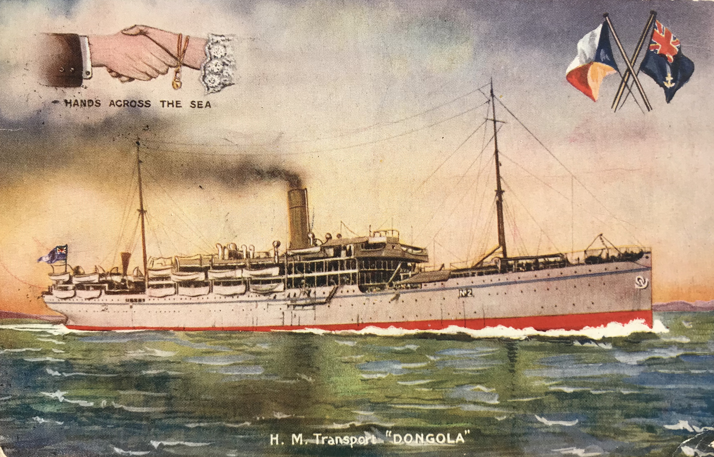

Srpskohrvatski / српскохрватски
Talk Contributions Create account Log in
Welcome to Wikipedia,
the free encyclopedia that anyone can edit.
6,099,038 articles in English
- Arts
- Biography
- Geography
- History
- Mathematics
- Science
- Society
- Technology
- Portals
From today's featured article
Milorad Petrović (18 April 1882 – 12 June 1981) was a lieutenant general in the Royal Yugoslav Army who commanded the 1st Army Group during World War II. He was commissioned into the Royal Serbian Army in 1901 and served in staff positions during the Balkan Wars and the Serbian campaign of World War I. After the 27 March 1941 Yugoslav coup d'état, he was appointed to command the 1st Army Group, responsible for the northern borders of Yugoslavia with Italy, Germany and Hungary. His formations were only partially mobilised when the German-led invasion of Yugoslavia began on 6 April. Significant fifth column activities affected the Yugoslav units from the outset. On 10 April, two determined armoured thrusts by the Germans caused the 1st Army Group to disintegrate, and the following day Petrović was captured by fifth columnists. He was soon handed over to the Germans and spent the rest of the war in a prisoner of war camp in Germany. After the war, he chose to return to communist-led Yugoslavia, living in Belgrade, and remaining active, swimming daily in the Sava well into his nineties. (This article is part of a featured topic: 1st Army Group (Kingdom of Yugoslavia).)
Recently featured: First Silesian War ▪ Samuel J. Randall ▪ All Souls (TV series)
Archive ▪ By email ▪ More featured articles
Did you know ...
- ... that one hundred years ago, Frank William North brought his congregation home from Russia on the SS Dongola (pictured)?
- ... that the recording of the Bon Iver song "iMi" took five years and nearly 30 collaborators to complete?
- ... that the University of Cologne awards an annual gender equality prize in honor of Jenny Gusyk, who became the school's first female and first foreign student when it was re-established in 1919?
- ... that fever hospitals, for infectious patients, were once the most common type of hospital in England and Wales?
- ... that a room in the Nebuta Museum in Aomori, Japan, is darkened so the floats on display can be illuminated as they are during the city's annual summer festival?
- ... that missionary and author Lucy Goodale Thurston survived a mastectomy without anaesthetic in 1855?
- ... that one Labour MP said that the result of the 2016 Sleaford and North Hykeham by-election could foreshadow an "electoral disaster" for the party?
- ... that Biff Pocoroba endeared himself with Atlanta Braves fans despite the team's poor performance, partly because they liked "the sound of his name"?
Archive ▪ Start a new article ▪ Nominate an article
 SS Dongola
In the news
COVID-19 pandemic
Disease ▪ Virus ▪ Testing ▪ Timeline ▪ By location ▪ Impact ▪ Notable deaths ▪ Portal
- Burundian president Pierre Nkurunziza (pictured) dies in office at the age of 55.
- Russian president Vladimir Putin declares a state of emergency after a diesel spill near Norilsk.
- SpaceX's Crew Dragon and Falcon 9 make their first crewed launch for NASA.
- Protests and riots break out across the United States and elsewhere following the killing of George Floyd in Minneapolis.
Ongoing: Hong Kong protests
Recent deaths: Emmanuel Issoze-Ngondet ▪ Rosa Maria Sardà ▪ Rosita Fornés ▪ Claudell Washington ▪ Pau Donés ▪ Manuel Felguérez ▪
Nominate an article
Pierre Nkurunziza
On this day
June 12: Dia dos Namorados in Brazil; Independence Day in the Philippines (1898); Loving day in the United States (1967)
- 1240 – The Disputation of Paris, in which four rabbis defended the Talmud against Nicholas Donin's accusations of blasphemy, began in the court of King Louis IX.
- 1954 – Dominic Savio (portrait shown), who was 14 years old when he died, was canonised by Pope Pius XII, making him one of the youngest non-martyred saints in the Catholic Church.
- 1967 – The U.S. Supreme Court struck down laws restricting interracial marriage in the landmark civil rights case Loving v. Virginia.
- 1994 – The Boeing 777, the world's largest twinjet, made its maiden flight.
Adriaen van Stalbemt (b. 1580) Egwale Seyon (d. 1818)Billy Butlin (d. 1980)
More anniversaries: June 11 ▪ June 12 ▪ June 13
Archive ▪ By email ▪ List of historical anniversaries
Pierre Nkurunziza
Today's featured article
Poesaka Terpendam (Buried Treasure) is a film from the Dutch East Indies produced by Tan's Film and starring Roekiah, Djoemala, and Kartolo. Roekiah was a favourite with Indonesian audiences and likened to Dorothy Lamour and Janet Gaynor . It seems likely that the film has been lost; following a fire in 1952 in Produksi Film Negara's storage facility, many old films shot on nitrate were deliberately destroyed.
This advertisement for Poesaka Terpendam was published in the magazine Poestaka Timoer ahead of the film's debut on October 22, 1941. The caption below the illustration, in Indonesian, translates to: "Frightening! Shocking! Great fights! Funny! Heart-pulling! The acting of Roekia, Indonesia's greatest fan-favourite movie star, will make viewers awed and satisfied, and Kartolo's foolery will make all viewers laugh without end!"
Advertisement credit: Tan's Film; restored by Chris Woodrich
Recently featured: Mariana ▪ Brown pelican ▪ James Francis Edward Stuart
Archive ▪ More featured pictures
Other areas of Wikipedia
- Community portal – Bulletin board, projects, resources and activities covering a wide range of Wikipedia areas.
- Help desk – Ask questions about using Wikipedia.
- Local embassy – For Wikipedia-related communication in languages other than English.
- Reference desk – Serving as virtual librarians, Wikipedia volunteers tackle your questions on a wide range of subjects.
- Site news – Announcements, updates, articles and press releases on Wikipedia and the Wikimedia Foundation.
- Village pump – For discussions about Wikipedia itself, including areas for technical issues and policies.
Wikipedia's sister projects
Wikipedia is hosted by the Wikimedia Foundation, a non-profit organization that also hosts a range of other projects:
- Commons
Free media repository - Wikidata
Free knowledge base - Wikispecies
Directory of species
- MediaWiki
Wiki software development - Wikinews
Free-content news - Wikiversity
Free learning Tools
- Meta-wiki
Wikimedia project coordination - Wikiquote
Collection of quotations - Wikivoyage
Free travel guide
- Wikibooks
Free textbooks and manuals - Wikisource
Free-content library - Wikitionary
Free-content library
Wikipedia languages
This Wikipedia is written in English. Started in 2001, it currently contains 6,099,754 articles. Many other Wikipedias are available; some of the largest are listed below.
- More than 1,000,000 articles: العربية ▪ Deutsch ▪ Español ▪ Français ▪ Italiano ▪ Nederlands ▪ 日本語 ▪ Polski ▪ Português ▪ Русский ▪ SvenskaУкраїнська ▪ Tiếng Việt ▪ 中文
- More than 250,000 articles: Bahasa Indonesia ▪ Bahasa Melayu ▪ Bân-lâm-gú ▪ Български ▪ Català ▪ Čeština ▪ Dansk ▪ Esperanto ▪ Euskara ▪ فارسی ▪ עברית ▪ 한국어 ▪ Magyar ▪ Norsk Bokmål ▪ Română ▪ Srpski ▪ Srpskohrvatski ▪ Suomi ▪ Türkçe ▪
- More than 50,000 articles: Asturianu ▪ Bosanski ▪ Eesti ▪ Ελληνικά ▪ English (Simple English) ▪ Galego ▪ Hrvatski ▪ Latviešu ▪ Lietuvių ▪ മലയാളം ▪ Norsk nynorsk ▪ Slovenčina ▪ Slovenščina ▪ ไทย
Complete list of Wikipedias
Text is available under the Creative Commons Attribution- ShareAlike License; additional terms may apply. By using this site, you agree to the Terms of Use and Privacy Policy. Wikipedia® is a registered trademark of the Wikimedia Foundation, Inc., a non-profit organization.